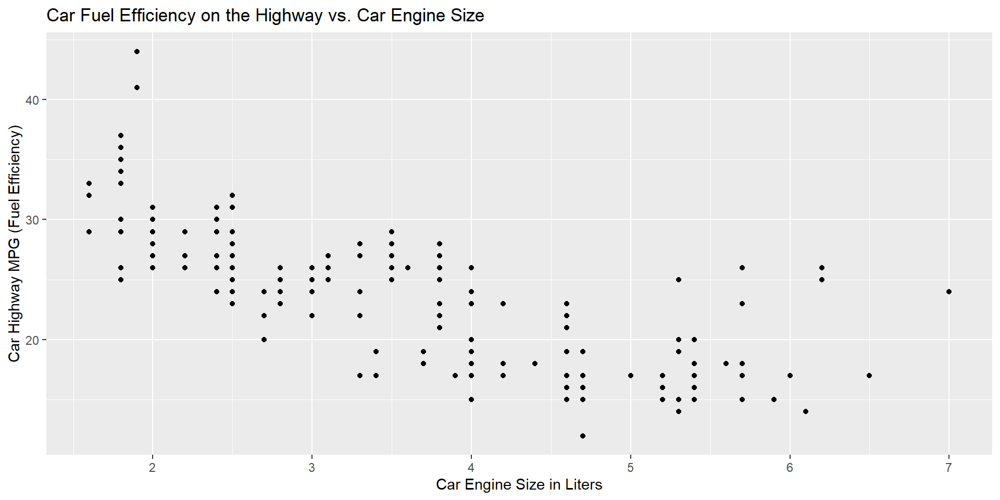

Check your working directory inside R Workbench (“Project:”) and switch project if necessary
Check your R version
R 4.5.1 use this!
R 4.2.0
1. Intro to the Grammar of Graphics and ggplot2
What Is a Dataset?
Imagine you are a data analyst for Ford and have information on ~200 cars. For each car, you know:
How big the engine is (engine size or displacement, in liters)
How many miles it gets on the highway (fuel efficiency, in Miles Per Gallons)
The class of the car (e.g., compact, SUV, etc.)
Questions for you:
What do you think a dataset like this might look like?
What is a dataset, anyway?
What does one row represent? What does one column represent?
Plotting Data
Imagine you pick two pieces of information (e.g., variables) from this car dataset:
variable 1: car fuel efficiency on the highway
variable 2: car engine size (engine displacement)
You want to understand the relationship between these two variables visually, so you start by creating a simple scatter plot…
Our First Plot with ggplot2

Before we explain the code to make this plot…
What’s on the x-axis? And on the y -axis?
What do you think each dot in this scatterplot represents?
If you wanted to pick a car that combines high fuel efficiency on the highway and a large engine size, where would you look on this plot? Are there cars like that here?
Larger engines tend to have __________ highway MPG efficiency
Understanding a Dataset: mpg
Open R Workbench and use R version 4.5.1
Copy/paste this code into your R Console and run it for a preview of the mpg dataset:
library(ggplot2)data(mpg)head(mpg)
Installing and Loading Packages in R
To use external tools like ggplot2, you need to first install and then load the package. A package is a a collection of code, data, and documentation.
Install a package. Only once per computer:
install.packages("ggplot2")
Load a package. Every time you use it, at the top of the script:
library(ggplot2)
In this course, we’re using RStudio Workbench, where everything is already installed. So you only need to load packages.
Key Dataset Terms
Observation = each row = one car
Variable = each column = a car property (e.g., displ, hwy, class)
displ: engine size or displacement, in liters
hwy: fuel efficiency, highway miles per gallon
class: class or type of car (compact, SUV…)
The mpg dataset has 234 observations (cars, in rows) and 11 variables (properties, in columns)
Code to Make our First Plot with ggplot2
library(ggplot2)ggplot(data = mpg) +geom_point(mapping =aes(x = displ, y = hwy))
What this code does:
Sets the data: mpg
Makes a scatterplot: geom_point()
Tells what to put on the axes: aes()
Maps the variable engine size to x-axis: x = displ
Maps the variable fuel efficiency to y-axis: y = hwy
Add Title and Axes Labels
Our initial plot also had a Title and Axes Labels, that’s the full code to add them (copy/paste it to your Console):
library(ggplot2)ggplot(data = mpg) +geom_point(aes(x = displ, y = hwy)) +labs(title ="Car Fuel Efficiency on the Highway vs. Car Engine Size",x ="Car Engine Size in Liters",y ="Car Highway MPG (Fuel Efficiency)")
Why Visualize Data?
Before you run numbers or models, it’s useful to look at the data visually!
Graphs help you spot patterns, relationships, and outliers
Visualization makes data more understandable and shareable
You can explore your questions more quickly
💻 Practice
Team up with someone, run this code in your Console, and answer the questions:
library(ggplot2)data(mpg)ggplot(mpg) +geom_point(aes(x = displ, y = hwy, color = class))
What do you see? Describe the plot to your partner
What do the first two lines of code do?
What does color = class do?
Replace the current x variable with the variable cty (city miles per gallons), run the code, and describe the new plot
Grammar of Graphics and ggplot2
We’ve been creating plots intuitively. Now, let’s learn them formally.
ggplot2 is the main R package used for data visualization
It’s part of the tidyverse, a collection of packages for data science: https://www.tidyverse.org/
Created by Hadley Wickham, who also co-authored your course textbook
Built using the theory called the Grammar of Graphics, a system for creating layered plots
Grammar and “Grammar of Graphics”
A grammar is a set of rules (syntax and morphology) that helps us structure a language. It lets us communicate clearly.
Applied to R and ggplot2…
A Grammar of Graphics is a set of rules for building data visualizations. It lets us create many types of plots using the same structure.
Main Components of the Grammar of Graphics
The Grammar of Graphics defines a plot as built from five main parts.
These five parts together are called a layer:
DATA: the dataset you are using
GEOM: the type of plot (e.g., points, bars, lines)
MAPPING: maps variables to aesthetics like x, y, color, etc. with aes()
STAT: whether the data should be transformed (e.g., counted) or not (identity)
POSITION: how things are arranged on the plot (e.g., stacked or jittered)
Grammar of Graphics: Code Template
Let’s look at how these five parts of a layer show up in ggplot2 code:
Scatterplot between cars’ engine size (displ) and highway fuel efficiency (hwy)
Long version:
ggplot() +layer(data = mpg, mapping =aes(x = displ, y = hwy),geom ="point", stat ="identity", position ="identity" ) +scale_y_continuous() +scale_x_continuous() +coord_cartesian()
Short version:
ggplot(data = mpg, aes(x = displ, y = hwy)) +geom_point()
Defaults Cheat Sheet
Use these defaults to simplify code:
stat = "identity" for geom_point()
position = "identity" unless changed
Common aes() calls can go in ggplot()
scale_*_continuous() not needed unless customizing
Quick Review
What does geom_point() do?
What does stat = "identity" mean?
When would you use facet_wrap()?
What’s wrong with aes(color = "blue")?
Try answering these without peeking at the slides!
5. Pratice: Gapminder Data
💻 Practice: Gapminder
Download today’s in-class materials from the website!
The gapminder dataset:
Contains data on various socio-economic indicators for countries around the world over multiple years (1957-2008). It includes information on life expectancy, GDP per capita, and population
Gapminder info: https://cran.r-project.org/web/packages/gapminder/readme/README.html and https://www.gapminder.org/
Recap: What We Learned Today
Core components of the Grammar of Graphics
Generate simple graphs with ggplot2
Use the Grammar of Graphics template and simplify it with defaults
R Coding Style Best Practices
Reminders
Homework 1 is due Wednesday, July 2nd
There is no class Thursday, July 3rd
To print these slides as pdf
Click on the icon bottom-right corner > Tools > PDF Export Mode > Print as a Pdf